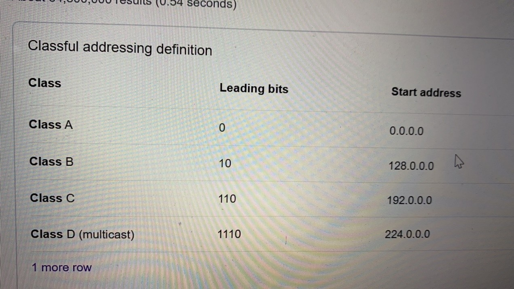

Subnet计算
四类网

具体业务中，不用转化成二进制来计算，以下是我的计算方法：
首先记住子网掩码每组可能出现的数字，分别是掩0位0，掩1位128，掩2位192，掩3位224，掩4位240，掩5位248，掩6位252，
掩7位254，掩8位255。然后用256减去该数字，就得到了该子网的地址数。
比如一个地址10.2.3.5/25，换算成子网掩码就是10.2.3.5 255.255.255.128。用256减128等于128。可以知道该子网有128个地址。
然后该子网网络号就是10.2.3.0，可用地址范围是10.2.3.1到10.2.3.126，广播地址是10.2.3.127
第一个0不能用，最后一个127也不能用
How many subnets and hosts per subnet can you get from the network 172.30.0.0 255.255.255.192?
That’s a /26 (classless) subnet mask, because it contains 26 bits having the value one (i.e. 26 on bits).
Keep in mind the default (classful) subnet for a class B IP address is a /16.
Indicating with x the number of ones in your mask and with y the number of zeros, you have:
x=26 (number of ones in classless CIDR)–16 (number of ones in classful) =10
y=32 (total bits)–26 (number of ones)=6
networks=2^10=1,024 方法：2^(数字1的个数-16)
hosts=(2^6)–2=62 方法：（2^(32-数字1的个数) ）- 2
What is the last valid host on the subnetwork 172.25.110.3 255.255.255.240?
256-240=16
172.25.110.0 – 15是一个区间段
16—31
首位两个是无效的，第一个是本机地址，最后一个是广播地址，
故而答案 172.25.110.14
Which subnet does host 172.31.50.211 with mask 255.255.248.0 belong to?
The correct answer is: 172.31.48.0